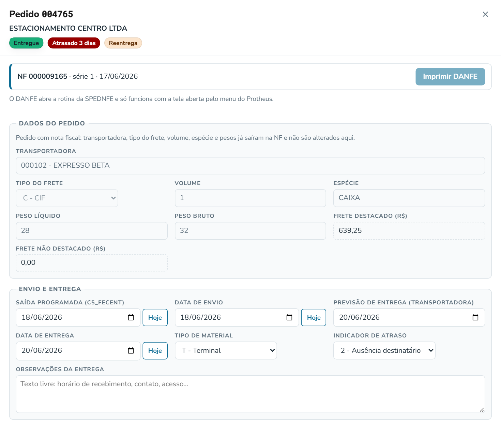
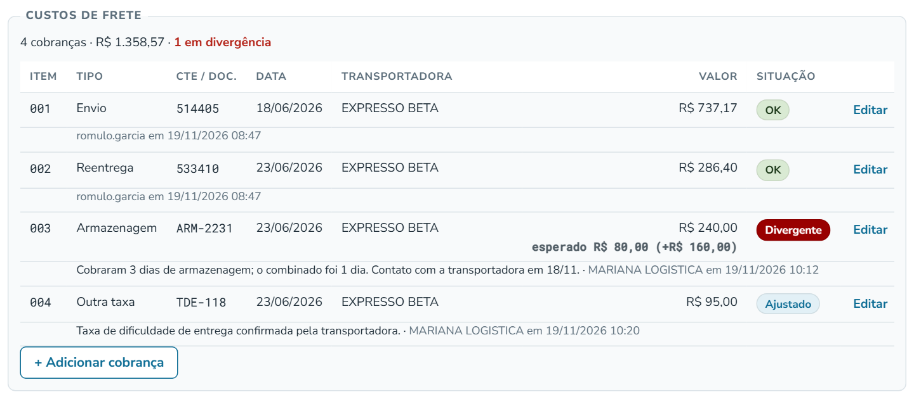
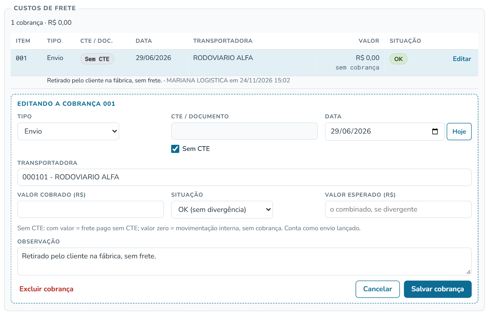
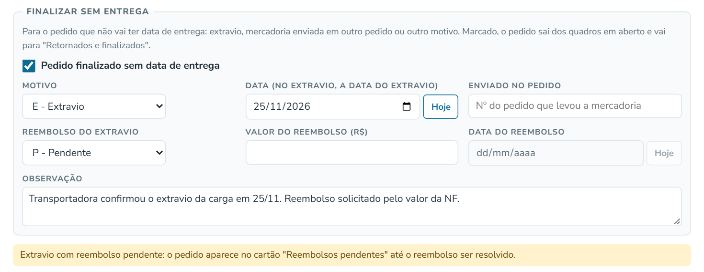
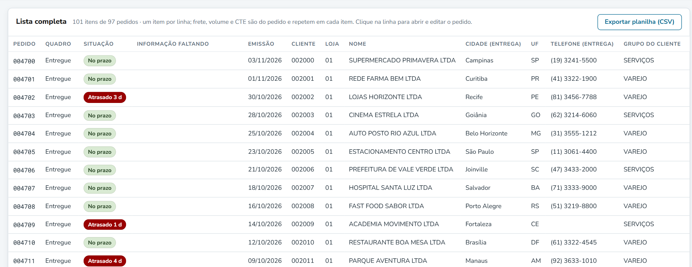
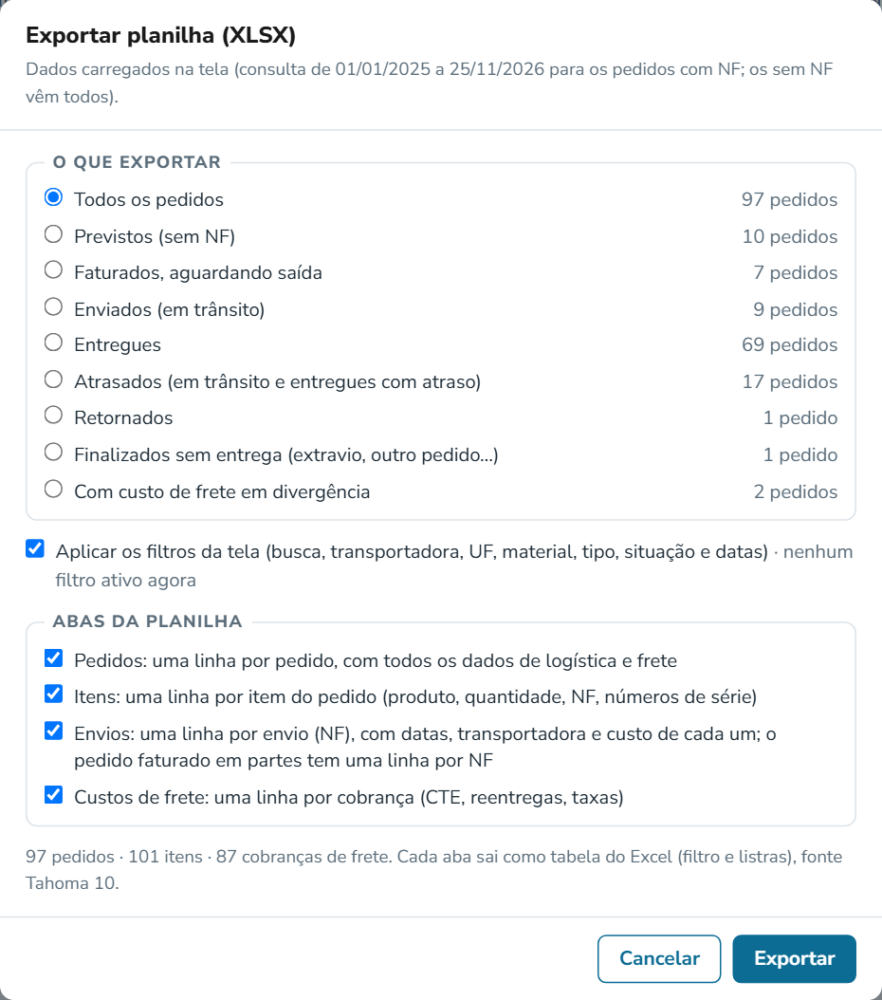
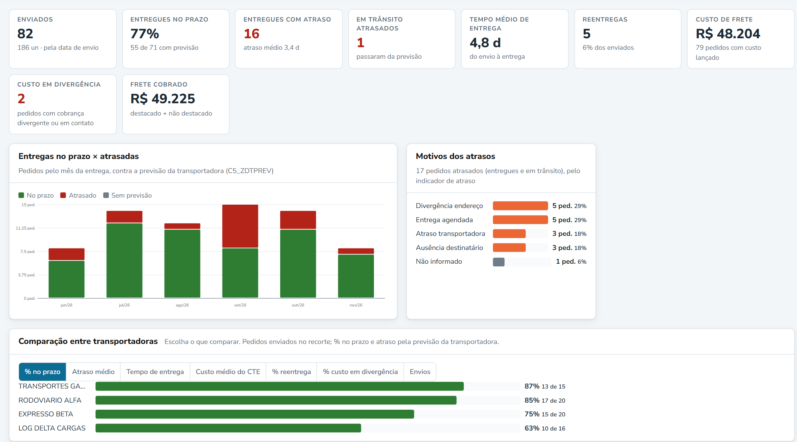
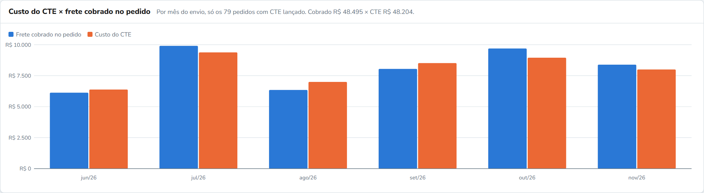

|
| ||||||||||||||||||||||
|
Logística · Pedidos de entrega · apresentação · atualizado em 25/11/2026 Logística no Protheus: os envios saem da planilhaOlá! Como foi feito na RX Pedidos, avançamos para a logística para “exterminar” a dependência de planilhas e ter uma única base de dados e de consulta: o Protheus. A tela Logística · Pedidos de entrega, aberta pelo menu do Protheus, passa a ser o lugar onde cada envio é acompanhado e registrado: da programação da saída até a entrega, com os custos de frete e o histórico de tudo o que foi alterado. Os envios que estavam na planilha ENVIOS 2026 já estão no Protheus, com rastreio de onde veio cada dado. Abaixo, como foi feito, o que a tela faz e os próximos passos. Os prints usam dados fictícios. | ||||||||||||||||||||||
| ||||||||||||||||||||||
| ||||||||||||||||||||||
Nada fica fora do Protheus. A tela lê e grava direto no pedido de venda e em três tabelas novas, por uma API própria. Quem tem a rotina no menu abre a tela, sem outro cadastro e sem outra senha.
A partir de agora, a planilha não precisa mais ser preenchida: o registro é feito na tela, no pedido. Bom saber:
| ||||||||||||||||||||||
| ||||||||||||||||||||||
Quadros Os pedidos em seis colunas: previstos (todos os sem NF), faturados aguardando a saída, enviados, enviados hoje (tudo o que saiu hoje, com a etapa de cada um), entregues e retornados e finalizados. Cada coluna tem a sua ordem e o filtro informação faltando; o cartão do pedido mostra o que falta (transportadora, peso, data de envio, CTE…). No topo, os alertas: informação faltando, saíram hoje, em trânsito atrasados, vencem em até 2 dias, faturados parados, sem previsão da transportadora, sem dados para a NF-e, aguardando reenvio, reembolsos pendentes e custo de frete em divergência. Um clique no cartão mostra só aqueles pedidos; outro clique volta a mostrar todos. A busca acha o pedido pelo número, cliente, cidade, NF, CTE, número de série ou telefone. Com o número do pedido, aparece só ele, mesmo que tenha sido entregue há meses. A atualização automática (desligada, 5, 10 ou 15 minutos) busca os dados de novo sozinha e espera enquanto há um pedido aberto.  | ||||||||||||||||||||||
Programação As saídas por dia, pela data de saída programada do pedido: não saíram, hoje, os próximos dias úteis e sem programação. Para reprogramar, basta arrastar o cartão para outro dia. O botão Saiu grava a data de envio de hoje, e o DANFE imprime a nota direto do cartão. A coluna Não saíram tem um filtro próprio (pedido, cliente, cidade), e os cartões do topo levam direto à coluna.  | ||||||||||||||||||||||
Mais abaixo, as entregas previstas para hoje: os pedidos em trânsito com a previsão da transportadora para hoje. O botão Entregue grava a data de entrega de hoje (a nova data, quando houve reentrega) e o pedido passa para Entregues.  | ||||||||||||||||||||||
Detalhe do pedido Um clique no pedido abre o detalhe. No topo, cada nota fiscal com o botão Imprimir DANFE. Depois, o formulário: dados para a NF-e (antes da nota), envio e entrega, custos de frete, reentrega, retorno e finalização. Salvar grava só o que mudou. Em Dados do pedido entrou o tipo do frete (CIF, FOB, por conta de terceiros, do remetente, do destinatário ou sem frete). Como a transportadora, o volume, a espécie e os pesos, ele é preenchido antes da NF, porque sai na nota.  | ||||||||||||||||||||||
Envios parciais Quando o pedido é faturado em partes, cada NF é um envio. O 1º fica em “Envio e entrega”; cada NF seguinte ganha o seu bloco, com data de envio, previsão, entrega, tipo de material, indicador de atraso e transportadora (que pode ser outra). O CTE e o frete daquele envio entram por + Cobrança deste envio, e a lista de custos mostra a qual envio cada cobrança pertence. O pedido só vai para Entregues quando todas as NFs foram entregues, e o cartão mostra “1 de 2 envios”. NF emitida no mesmo dia da primeira conta como o mesmo envio, automaticamente; se ela não saiu junto, o botão Não saiu junto registra o envio separado.  | ||||||||||||||||||||||
Custos de frete Logo abaixo de “Envio e entrega”, a lista das cobranças do pedido com o total. Um pedido pode ter várias: o CTE do envio, cada reentrega, armazenagem, devolução ou outra taxa. Quando o CTE chega com valor diferente do combinado, a cobrança é marcada como Divergente, com o valor esperado e uma observação do contato com a transportadora. Depois vira Em contato, Ajustado ou Aceito como veio. O alerta dos Quadros e o filtro “Custo de frete em divergência” mostram tudo o que ainda está em aberto.  | ||||||||||||||||||||||
+ Adicionar cobrança e Editar abrem o formulário ali mesmo e gravam na hora, sem fechar o pedido. A exclusão pede confirmação e fica registrada no histórico.  | ||||||||||||||||||||||
Sem CTE? Marque Sem CTE: com valor, é frete pago sem o documento; com valor zero, movimentação sem cobrança (por exemplo, retirada pelo cliente). Qualquer cobrança lançada, de qualquer tipo, tira o pedido da pendência “falta CTE ou custo de frete”.  | ||||||||||||||||||||||
Finalizar sem entrega Para o pedido que não vai ter data de entrega: extravio, mercadoria enviada em outro pedido ou outro motivo. Marcado, ele sai dos quadros em aberto e vai para “Retornados e finalizados”. No extravio fica registrado o reembolso (pendente, reembolsado ou sem reembolso, com valor e data), e o cartão Reembolsos pendentes mostra o que falta receber. Também no detalhe: o retorno à empresa ganhou uma observação (o que voltou, o estado da mercadoria, o combinado com o cliente), e o indicador de atraso ganhou a opção Outros, com um campo para descrever o que aconteceu.  | ||||||||||||||||||||||
Histórico de alterações No fim do detalhe, o histórico do pedido: cada campo alterado, de quanto para quanto, por quem e quando. O que veio da planilha aparece como Importação, e os CTEs copiados para a tabela nova, como Carga inicial.  | ||||||||||||||||||||||
Cliente, frete e itens O frete cobrado no pedido contra o custo das cobranças, os dados do cliente com o endereço de entrega, o telefone do cadastro (com link para discar) e a mensagem para a nota, e os itens com os números de série.  | ||||||||||||||||||||||
Lista completa e Exportar XLSX A Lista completa traz um item por linha, com todas as colunas e ordenação.  | ||||||||||||||||||||||
O botão Exportar XLSX gera a planilha na hora, escolhendo o que sai: todos, previstos, faturados, enviados, entregues, atrasados, retornados, finalizados sem entrega ou com custo em divergência, com ou sem os filtros da tela. As abas são Pedidos, Itens, Envios (uma linha por NF) e Custos de frete, em formato de tabela do Excel. A planilha passa a ser só uma saída: a base é o Protheus.  | ||||||||||||||||||||||
Indicadores Entregas no prazo e atrasadas por mês (pela previsão da transportadora), motivos dos atrasos, comparação e ranking das transportadoras (% no prazo, atraso médio, tempo de entrega, custo médio, % reentrega, % com custo em divergência) e o frete acumulado por transportadora. No pedido faturado em partes, cada NF conta como um envio.  | ||||||||||||||||||||||
E o custo de frete × frete cobrado por mês, com os pedidos em que o custo passou do cobrado do cliente. O custo soma todas as cobranças: CTE, reentregas e taxas.  | ||||||||||||||||||||||
Planilha Google (só consulta) Para quem prefere consultar em planilha, há uma planilha Google ligada ao Protheus que se atualiza sozinha a cada 15 minutos, com as abas Pedidos, Itens, Envios, Custos de frete e Resumo e as mesmas regras da tela. Ela é só para consulta: o registro continua sendo feito na tela. | ||||||||||||||||||||||
Como tudo está no Protheus e é servido por uma API, outras ferramentas podem ler os mesmos dados, sem planilha e sem digitar de novo. Um exemplo é o CRM: dentro do cliente, o vendedor consulta onde está cada pedido, se já saiu, a transportadora, a nota, o CTE, a previsão e a data de entrega. Ele acompanha a entrega sem precisar perguntar à logística, e todo mundo olha para o mesmo dado. | ||||||||||||||||||||||
O próximo passo é integrar as APIs das transportadoras:
| ||||||||||||||||||||||
|
Qualquer dúvida ou ajuste, é só me chamar. Fico à disposição. |